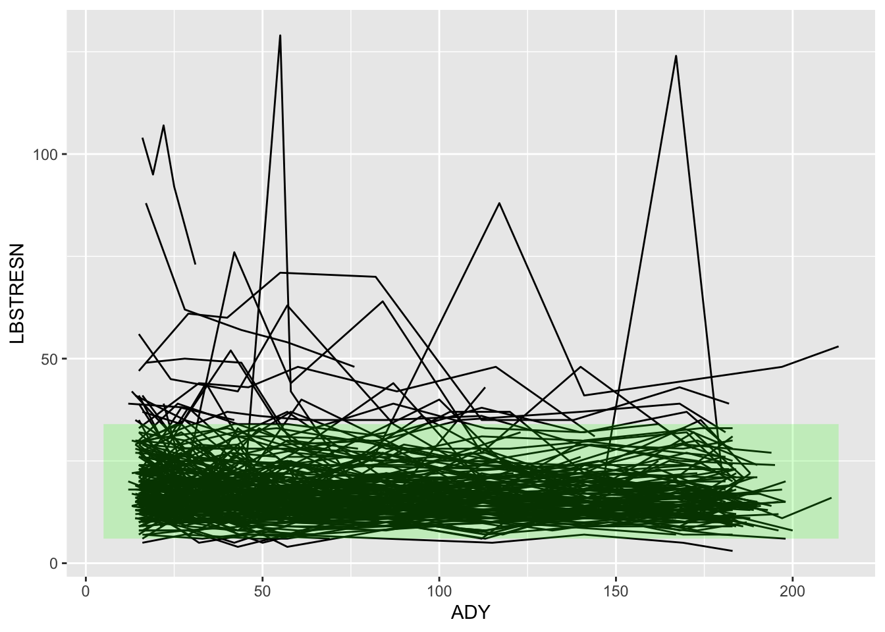

ALT <- import("./data/adlbc.xpt") %>%
filter(PARAMCD == "ALT")
ALT2 <- ALT %>%
filter(VISITNUM > 3) %>%
mutate(WEEK = floor(ADY/7))
TREATfac <- ALT2 %>%
select(TRTA, TRTAN) %>%
unique() %>%
arrange(TRTAN) %>%
mutate(TREATMENT = factor(TRTA, ordered = TRUE))
ALT2 <- ALT2 %>%
mutate(TREATTXT = factor(TRTP, levels = TREATfac$TRTA))
uniqueVal <- function(x){
if(length(unique(x))>1) simpleWarning(paste0("More than one value in column:",x))
unique(x)
}6 Mini-project 6 - {ggplot2} extensions
This exercise will introduce five {ggplot2} extension packages: {gghighlight}, {ggdist}, {ggridges}, {patchwork}, {cowplot}
In this Mini-Project we will be looking at some R packages that augment plots created using {ggplot2}. One of the great things about learning {ggplot2} is that many packages create visualizations that are {ggplot2} objects. This means they can be augmented and enhanced using these helper packages.
In this mini project we’ll meet {gghighlight}, {ggdist}, {ggridges}, {patchwork} and {cowplot} but there are many others to explore.
6.1 1. Create a dataset
This dataset is the Analysis Lab Chemistry data from CDISC that was created for training/testing purposes. We are focussing on the Alanine Aminotransferase (ALT) results. We are subsetting only the “Active” phase of study for the ALT2 dataset. We are calculating a new variable WEEK that defines the week within the Analysis Active Treatment Period.
6.2 2. Create a spaghetti plot of ALT measurements over time
First, let’s show a spaghetti plot of ALT measurements over time (profiles for each subject) and show the Normal Range. Using what we learned in the last mini project, fill in the mapping argument for the ggplot and geom_line statement. We’ll use ADY for the x axis and LBSTRESN for the y axis. In the geom_line we’ll want to connect all values for a given subject by using the group attribute.
We’re also going to use the A1LO and A1HI columns to make a shaded region showing the normal range of values for ALT. The alpha argument makes this shaded region more transparent. We want to draw the shaded geom_ribbon area once, (rather than superimposing the A1LO and A1HI values from the dataset (which are repeated for every subject). We use the function uniqueVal which we defined earlier to pick out a single value for the normal range minimum and maximum values.
ALTmin <- uniqueVal(ALT2$A1LO)[1]
ALTmax <- uniqueVal(ALT2$A1HI)[1]
plot1 <- ALT2 %>%
ggplot(mapping = aes(x=ADY, y=LBSTRESN )) +
geom_line(mapping = aes(group=USUBJID )) +
geom_ribbon(mapping = aes(ymin = ALTmin, ymax = ALTmax), fill = "green", alpha = 0.2)
plot1
It’s often useful to do this first plot to see what the data look like before we “tidy” it. Note that there are some VERY high values. Rather than omit these points, we just want to “zoom in” on a narrower range for the y-axis. We introduced this in the last Mini-project.
plot1b <- plot1 +
coord_cartesian(ylim=c(0, 100), xlim = c(0, 125))
plot1b6.3 3. Using {gghighlight}
What would be useful is if we could highlight those subjects whose lab results depart from the normal range. We can do this using the {gghighlight} package. {gghighlight} takes an existing plot object and highlights values in the plot that match a given predicate (boolean expression). gghighlight will make any values NOT matching the predicate fainter / grey so that the remaining values are more obvious. If a group attribute is being used in the plot then it will provide a label to help identify which group(s) are being highlighted in the plot. Here because we have many subjects in the data, it skips showing the label.
The predicate used in gghighlight here checks whether each subject has any values for which the LBNRIND variable is missing i.e. it is checking whether each subject has any values which are marked either “HIGH” or “LOW”.
library(gghighlight)
plot1c <- plot1b +
gghighlight::gghighlight(any(LBNRIND = "")) Warning: There were 247 warnings in `dplyr::summarise()`.
The first warning was:
ℹ In argument: `quasi_parallel(p1 = any(LBNRIND = ""), ..nrow = 1L)`.
ℹ In group 1: `highlight.......... = 1`.
Caused by warning in `any()`:
! coercing argument of type 'character' to logical
ℹ Run `dplyr::last_dplyr_warnings()` to see the 246 remaining warnings.Warning: There was 1 warning in `dplyr::transmute()`.
ℹ In argument: `quasi_parallel(p1 = any(LBNRIND = ""), ..nrow = n())`.
Caused by warning in `any()`:
! coercing argument of type 'character' to logicallabel_key: USUBJIDplot1cIn order to use facetting with gghighlight you need to set the argument calculate_per_facet to tell gghighlight that you want to highlight values that meet the predicate within each facet. Otherwise gghighlight will show ALL observations within the facet.
plot1d <- plot1b +
facet_wrap( ~ TRTP) +
gghighlight::gghighlight(any(LBNRIND = ""),
calculate_per_facet = TRUE) Warning: There were 247 warnings in `dplyr::summarise()`.
The first warning was:
ℹ In argument: `quasi_parallel(p1 = any(LBNRIND = ""), ..nrow = 1L)`.
ℹ In group 1: `highlight.......... = 1`.
Caused by warning in `any()`:
! coercing argument of type 'character' to logical
ℹ Run `dplyr::last_dplyr_warnings()` to see the 246 remaining warnings.Warning: There were 3 warnings in `dplyr::summarise()`.
The first warning was:
ℹ In argument: `quasi_parallel(p1 = any(LBNRIND = ""), ..nrow = 1L)`.
ℹ In group 1: `highlight.......... = 1`.
Caused by warning in `any()`:
! coercing argument of type 'character' to logical
ℹ Run `dplyr::last_dplyr_warnings()` to see the 2 remaining warnings.label_key: USUBJIDplot1d6.4 4. Using geom_boxplot to visualize distributions
Boxplots give a useful summary of the distribution of values. They show the quartiles, median and range of the data. The problem with boxplots is that they do not show the number of values. So in this next plot we are going to try to overlay the data points so that we can see both points and boxplot information.
Let’s look at the “Data Visualization with ggplot2” Cheat Sheet to see what the options are for boxplots. Note that geom_boxplot is in the section marked “Discrete x, continuous y”. Since WEEK is a continuous (numeric) value in our data, the boxplot is going to work best if we convert it to discrete values using the function as.factor( ). Note that when we do this the week values are equally spaced so that the boxplots on the left show data 1 week apart, while the boxplots on the right show data that is 8 weeks apart. This is a limitation of treating WEEK as a categorical variable.
ALT2 %>%
filter(WEEK %in% c(0, 5, 10, 15, 20, 25, 30)) %>%
ggplot() +
geom_boxplot(mapping = aes(x = as.factor(WEEK), y = LBSTRESN))Now let’s add data on top of the boxplots. We can do this quite easily using geom_point. Add mapping arguments where needed in the code below.
ALT2 %>%
filter(WEEK %in% c(0, 5, 10, 15, 20, 25, 30)) %>%
ggplot(mapping = aes(x = as.factor(WEEK), y = LBSTRESN)) + # Define common mapping here
geom_boxplot() + # Inherits mapping from ggplot()
geom_point() # Inherits mapping from ggplot()It might be more useful to spread out the points a little so that we can see individual points. We do this using geom_jitter. We can also apply the alpha setting to the points to add transparency so we can see the boxplots beneath. The width option in geom_jitter controls the horizontal jittering of the points. Smaller values will cluster them closer to the middle of the boxplot. The default is to use the full width of the boxplot. Note that in geom_boxplot we set the argument outlier.shape = NA which will “turn off” showing the outliers, since in this case we show them via geom_jitter we don’t need to show them in the boxplot as well.
plot2b <- ALT2 %>%
filter(WEEK %in% c(0, 5, 10, 15, 20, 25, 30)) %>% # Filter condition from previous example
ggplot(mapping = aes(x = as.factor(WEEK), y = LBSTRESN)) + # Aesthetic mappings from previous example
geom_boxplot(outlier.shape = NA) + # Turn off outlier points in the boxplot
geom_jitter(alpha = 0.2, width = 0.1) # Add jittered points with transparency and controlled spread
plot2b
6.5 5. Showing distributions using other packages
Packages like {ggdist} and {ggridges} can also be used to show the distribution of values. Each of these packages create {ggplot2} objects, which can be annotated and used like any other {ggplot2} object. Typically {ggplot2} extensions add new geom_ or stat_ functions.
Let’s use {ggdist} to show dotplots of the data. Because {ggdist} shows the distribution of points, it’s often easier to see these horizontally, rather than vertically. In this case we have rotated the plot, putting the continuous ALT value on the x-axis and the week value on the y-axis.
library(ggdist)
ALT2 %>%
filter(WEEK %in% c(0, 5, 10, 15, 20, 25, 30)) %>%
ggplot(mapping = aes(x = LBSTRESN, y = as.factor(WEEK))) +
coord_cartesian(xlim=c(0, 100)) +
stat_dotsinterval(slab_shape = 19, quantiles = 100)Another option is to show the distribution as a smooth curve, rather than dots. {ggdist} has a stat_slab geom to help with this. The plot shown below is sometimes called a “raincloud plot” for obvious reasons.
ALT2 %>%
filter(WEEK %in% c(0, 5, 10, 15, 20, 25, 30)) %>%
ggplot(mapping = aes(x = LBSTRESN, y = as.factor(WEEK), fill = as.factor(WEEK))) +
coord_cartesian(xlim=c(0, 75)) +
stat_slab() +
stat_dotsinterval(side = "bottom", scale = 0.5, slab_size = NA) The {ggridges} package takes this presentation of distributions and slightly overlays the distribution “ridges” to minimise space. The plot allows us to quite readily compare between distributions.
library(ggridges)
Attaching package: 'ggridges'The following objects are masked from 'package:ggdist':
scale_point_color_continuous, scale_point_color_discrete,
scale_point_colour_continuous, scale_point_colour_discrete,
scale_point_fill_continuous, scale_point_fill_discrete,
scale_point_size_continuousALT2 %>%
filter(WEEK %in% c(0, 5, 10, 15, 20, 25, 30)) %>%
ggplot(mapping = aes(x = LBSTRESN, y = as.factor(WEEK))) +
coord_cartesian(xlim=c(0, 80)) +
geom_density_ridges()Picking joint bandwidth of 5.076.6 6. Using geom_bar to count things
Bar charts can be used to count the number of observations in the data. Let’s use geom_bar to visualize the incidence of “Low”, “Normal” and “High” ALT within each week of treatment.
Use the “Data visualization with ggplot2” Cheat Sheet (from the Help menu in RStudio) to see what aesthetics can be specified for geom_bar bar chart to show how many observations are in each category of LBNRIND across WEEK.
ALT2 %>%
filter(WEEK %in% c(2, 4, 6, 8, 16, 24, 26)) %>% # Filter to include only these specific weeks
ggplot( ) +
geom_bar(mapping = aes(x = as.factor(WEEK), # Convert WEEK to a factor for discrete bars
fill = LBNRIND))Most individuals have Lab measurements on weeks 2, 4, 6, 8, 16, 24, 26. Let’s filter the data to show JUST those weeks.
ALT2 %>%
filter(WEEK %in% c(2, 4, 6, 8, 16, 24, 26)) %>%
ggplot( ) +
geom_bar(mapping = aes(x = WEEK,
fill = LBNRIND))Once again, we want to convert the WEEK variable from continuous to categorical. As above, we can do that with as.factor.
plot3 <- ALT2 %>%
filter(WEEK %in% c(2, 4, 6, 8, 16, 24, 26)) %>%
ggplot( ) +
geom_bar(mapping = aes(x = as.factor(WEEK),
fill = LBNRIND))
plot3
In a stacked bar chart it’s hard to see exactly how the LOW and HIGH groups change over time as the height of their values is much smaller than the NORMAL observations. We can place the LOW and HIGH separately on the x-axis using the option position = dodge. Note that we’re also turning LBNRIND into a factor ordered “LOW” -> “NORMAL” -> “HIGH”. This is because default sorting of character columns is alphanumeric.
plot3b <- ALT2 %>%
filter(WEEK %in% c(2, 4, 6, 8, 16, 24, 26)) %>%
mutate(OUTRANGF = factor(LBNRIND,
levels = c("LOW","NORMAL","HIGH"))) %>%
ggplot() +
geom_bar(mapping = aes(x = as.factor(WEEK),
fill = OUTRANGF),
position = "dodge")
plot3bAs we did in the last mini project, we can now take plots plot1b and plot2b and apply labels to tidy up axes labels using the labs function.
plot1e <- plot1b +
labs(x = "Alanine Aminotransferase (U/L)", # Based on x_var = LBSTRESN in plot_ALT
y = "Week") # Based on y_var = WEEK in plot_ALT
plot2c <- plot2b +
labs(x = "Week", # Based on x = as.factor(WEEK)
y = "Alanine Aminotransferase (U/L)") # Based on y = LBSTRESN
plot3c <- plot3b +
labs(x = "Week", # Based on x = as.factor(WEEK)
y = "Number of Observations") # geom_bar counts observations by default6.7 7. Using {patchwork}
The {patchwork} package allows you to quickly and easily combine plots. To combine two plots into one, you simply “add” using the “+” operator.
You can find out more on how to specify layouts from the {patchwork} documentation.
library(patchwork)
p1 <- plot1e | plot2c
p1
Try out other layouts to combine the three graphs:
p2 <- (plot2c | plot3c) / plot1e
p2
You can then use these combined plots as one object, provide a title for the combination etc. {patchwork} has its own function plot_annotation that gives similar functionality to the labs function in {ggplot2} but annotates the combined plot object. Use what you learned in mini project 5 to add titles and subtitles to the combined plot.
plot_annotation also allows you to designate a pattern for identifying sub-figures using the tag_levels. Here we’re specifying the first plot with a lower case letter a and the second will follow the pattern to show b. We’re also using tag_suffix to put a round bracket after the tag. Try the code below and then see what happens if you specify the tag_levels = "i" instead of “a”.
p2b <- p2 + plot_annotation(
title = ,
subtitle = ,
tag_levels="a", tag_suffix = ")")
p2b
6.8 8. Using {cowplot}
The {cowplot} package from Claus O. Wilke (hence COW) has a number of very useful additional functions that work on {ggplot2} plot objects. Claus’ book “Fundamentals of Data Visualization” is a really excellent book about creating high quality data visualizations and I heartily recommend that you read it. The package turns recommendations from the book into functions that you can apply in R.
In the code below we are going to add a watermark to the plot we created above.
library(cowplot)
Attaching package: 'cowplot'The following object is masked from 'package:patchwork':
align_plotsThe following object is masked from 'package:lubridate':
stampggdraw(p2b) +
draw_label("DRAFT", color = "grey", alpha=0.3, size = 100, angle = 45) 
6.9 9. Challenge
Using what you’ve learned in this Mini Project 6, please try to create a graph similar to the one attached. Red points show ALT values that are outside the range i.e. where OUTRANGT is “High” or “Low”. You may need to refer back to Mini Project 5 to complete this challenge.

# Ensure necessary libraries are loaded
library(tidyverse)
library(rio) # For import()
# Re-load and prepare ALT data with necessary columns from adlbc.xpt
inFile <- "./data/adlbc.xpt"
ALT_data_for_challenge <- import(inFile) %>%
filter(PARAMCD == "ALT") %>%
mutate(
WEEK = floor(ADY / 7),
LBNRIND = factor(LBNRIND, levels = c("LOW", "NORMAL", "HIGH"))
) %>%
filter(WEEK %in% c(2, 4, 6, 8, 16, 24, 26))
# Extract the Upper Limit of Normal (ULN) for ALT.
alt_uln_value <- unique(ALT_data_for_challenge$LBNRULN)
if (length(alt_uln_value) > 1) {
message("Warning: Multiple ULN values found for ALT. Using the first one for the horizontal line.")
alt_uln_value <- alt_uln_value[1]
}
# Create the challenge plot
challenge_plot <- ALT_data_for_challenge %>%
ggplot(aes(x = WEEK, y = LBSTRESN)) +
geom_point(color = "grey60", alpha = 0.6, size = 1.5) +
geom_point(data = . %>% filter(LBNRIND %in% c("HIGH", "LOW")),
color = "red", size = 2, shape = 1) +
# FIX: Pass the main data to geom_hline so it knows about the faceting variable
geom_hline(data = ALT_data_for_challenge, aes(yintercept = alt_uln_value),
linetype = "dashed", color = "blue", linewidth = 0.8) +
facet_wrap(~ TRT01A) +
labs(
x = "Week",
y = "Alanine Aminotransferase (U/L)",
title = "ALT Values Over Time by Treatment Arm",
subtitle = "Red points indicate values outside the normal range (High/Low)",
caption = paste0("Dashed line represents ULN (", alt_uln_value, " U/L)")
) +
theme_minimal() +
theme(
panel.grid.minor = element_blank(),
panel.grid.major.x = element_blank(),
plot.title = element_text(hjust = 0.5),
plot.subtitle = element_text(hjust = 0.5),
strip.background = element_rect(fill = "grey90", color = NA),
strip.text = element_text(face = "bold")
)
# Display the plot
challenge_plot